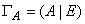
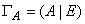
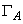
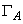
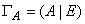
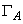

1.3.3.5 Алгоритм нахождения обратной матрицы с помощью
элементарных преобразований строк
Для данной матрицы 
 -го порядка строим прямоугольную
матрицу  размера
-го порядка строим прямоугольную
матрицу  размера  , приписывая к справа
единичную матрицу. Далее, используя элементарные преобразования строк, приводим
матрицу  к виду ,
что всегда возможно, если матрица невырождена. Тогда .
, приписывая к справа
единичную матрицу. Далее, используя элементарные преобразования строк, приводим
матрицу  к виду ,
что всегда возможно, если матрица невырождена. Тогда .
-го порядка строим прямоугольную
матрицу  размера , приписывая к справа
единичную матрицу. Далее, используя элементарные преобразования строк, приводим
матрицу  к виду ,
что всегда возможно, если матрица невырождена. Тогда .